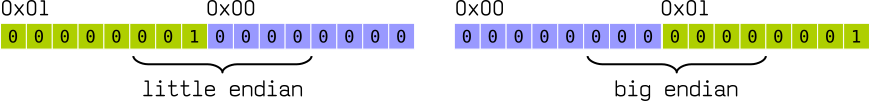

Introduction
There’s no common blueprint for database management system design. Every data‐ base is built slightly differently.
Database systems store data in memory and on disk.
Disk-Base Database
HHD
The smallest transfer unit of a spinning drive is a sector. Sector sizes typically range from 512 bytes to 4 Kb.
SSD
A typical SSD is built of memory cells, connected into strings (typically 32 to 64 cells per string), strings are combined into arrays, arrays are combined into pages, and pages are combined into blocks.
Depending on the exact technology used, a cell can hold one or multiple bits of data.
Pages vary in size between devices, but typically their sizes range from 2 to 16 Kb. Blocks typically contain 64 to 512 pages.
Blocks are organized into planes and, finally, planes are placed on a die. SSDs can have one or more dies.
In-Memory Database
In-memory database management systems store data primarily in memory and use the disk for recovery and logging.
This kind of database maintain backups on disk to provide durability and prevent loss of the volatile data. Some databases store data exclusively in memory, without any durability guarantees
File Formats
Database store data in pages (fixed size smallest unit of data).
Size of a block is your choice (256B, 512B, 1024B, etc..), but typical file system block size is 4KB - 16KB.
Binary Encoding
To store data on disk efficiently, it needs to be encoded using a format that is compact and easy to serialize and deserialize.
Primitive Types
Keys and values have a type, such as integer, date, or string, and can be represented in their raw binary forms.
Most numeric data types are represented as fixed-size values. When working with multibyte numeric values, it is important to use the same byte-order (endianness) for both encoding and decoding.
Endianness
Endianness determines the sequential order of bytes.
Given a value 0x0001, How do we actually align its two bytes in memory?

European languages conventionally use left-to-right writing system. That can be compared to big-endian, where the most significant digit goes to the left and least significant digits continue to the right: 1234
Hebrew, Farsi, and Arabic, write words right-to-left. And so is little-endian, where the most significant digit is on the right. 4321
Example:


Strings and Variable-Size
Strings and other variable-size data types (such as arrays of fixed-size data) can be serialized as a number, representing the length of the array or string, followed by size bytes.
Bit-Packed Data: Booleans, Enums, and Flags
Booleans can be represented either by using a single byte, or encoding true and false as 1 and 0 values. Since a boolean has only two values.
Enum
Enumerated types are used to represent often repeated low-cardinality values. For example, We can encode a tree node type using an enum:
#![allow(unused)] fn main() { enum NodeType { Root, // 0 Branch, // 1 Leaf // 2 }; }
Flag
Another closely related concept is flags, kind of a combination of packed booleans and enums.
Flag values can be read and written from the packed value using bitmasks and bitwise operators. Lets see this true table

Here gray recrangles represent 0 and greens are 1.
#![allow(unused)] fn main() { let a = 0b_0011; // Bits : 0 0 1 1 let b = 0b_0101; // We need : ^ ^ println!("Out: {:04b}", a & b); }
We can represent bits (a = 0011) with prefix 0b. Here we are using & bitmask,
Record
A record is a collection of fields. Records in a relational database are usually called as "rows". In NOSQL are called "document".
Example:
#![allow(unused)] fn main() { use std::mem::size_of; struct Date { day: u8, month: u8, year: u16, } println!("{}", size_of::<Date>()); }
This is a fixed-length size record.
Slotted Pages
Represent Tree
There is many way to represent a tree on disk, A tree can be use for indexing database records (such as BPlusTree).
Using Pointer
This is the best way to represent a tree on disk. It use pointer of next block on disk.
| Index | Element | Left | Right |
|---|---|---|---|
| 0 | -- | -- | 5 |
| 1 | A | 0 | 0 |
| 2 | B | 1 | 3 |
| 3 | C | 0 | 0 |
| 4 | D | 2 | 0 |
| 5 | E | 4 | 6 |
| 6 | F | 0 | 0 |
To represents this tree:
E
/ \
/ \
/ \
D F
/
/
B
/ \
/ \
/ \
A C
-
Advantages:
- Easy structure in which to search
- Easy to insert Easy to delete
- Easy to read tree back in from disk after writing out (no recreation of links required)
- The programmer can link unused table entries into a "free list." and can write functions to allocate and deallocate entries in the table for use as tree nodes.
-
Disadvantages:
- Memory allocation is not truly dynamic and it can be difficult to match the array size with the size range of the tree.
Page
#![allow(unused)] fn main() { }